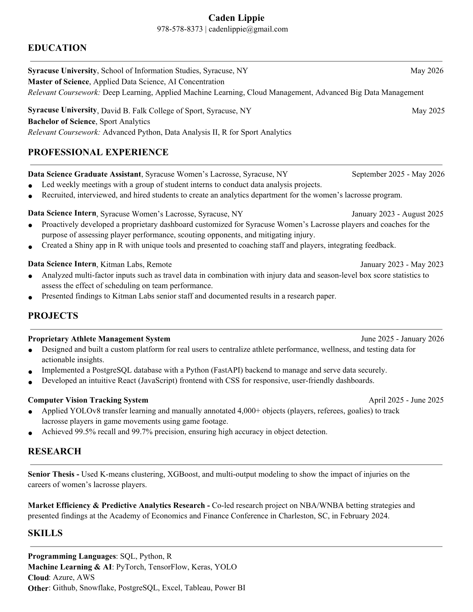

Hi I'm
Caden
Lippie.
Welcome
to my
Portfolio!
Feel free to check out some of my work.
Walkthroughs
Here are some walk-throughs I've made on some topics I find interesting.
Creating a Multilayer Perceptron from Scratch
In this walk-through I demonstrate how to create a relativley small multilayer perceptron using just a digital notepad and TI-84 calculator. My goal for this project was to gain a more fundamental understanding of neural networks that I can lean on when dealing with more complex models.
XGBoost from scratch
In this walkthrough I show how to create a gradient boosted decision tree that uses the core math from XGBoost. This was done on just a digital notepad and TI-84 calculator. The purpose of this project was to gain a better understand of the foundations of XGBoost which I can use to make more informed decisions when modeling.
Projects
Below are some projects I've worked on.
Orange Hoops Data Science Challenge
Corganized by SU Men’s Basketball, the iSchool and Falk this one week competition challenged teams to choose the best option to take the game-tying shot.
This project consisted of:
- Cleaning an NCAA men’s basketball play-by-play dataset, adding advanced statistics, and combining with scraped publicly available data.
- Creating interactive Shiny app that predicted the best player to take the game-tying shot when down either 2 or 3 points.
- Clustering players based on play-by-play data and suggested play designs for the recommended players based on cluster profile.
Democratizing ESG: Predicting Corporate Sustainability Scores from Free Public Data
This semester long project was for my graduate level Applied Machine Learning class.
This project was left relativley open-ended with the main objective
to address needs of a stakeholder using a unique approach. I worked with two peers to
attempt to extract signal from Enviornmental, Social, and Governance (ESG) scores.
This project consisted of:
- Using natural language processing (NLP) to extract features from SEC-10k filings for over 300 public US based companies.
- Feature enginering, sentiment, document structure and general financial features.
- Model selection
Athlete Management System
A full-stack web dashboard built for Syracuse Women's Lacrosse coaching staff to monitor athlete health, daily
readiness, and GPS performance data all in one place.
This was my first full-stack web project. In the past, I tried alternative dashboard methods like Power BI and R Shiny,
but these didn't give me the freedom and customization I wanted. That led me to this project, where I wanted to design
the full system from scratch. I learned a lot through this process and was able to use the site to create a weekly
report for the coaching staff. Since everything is in one place, it makes for more connected and informed decisions. For
example, the daily readiness survey results were previously conditionally formatted by a set value in a Google Sheet (>
8 = green, < 4=red). With this system, you can see if a player's scores fall within 25% of their own scores, making the
formatting more meaningful.
The Impact of Major Injuries on Career Trajectories in Women’s Collegiate Lacrosse
This thesis examines the impact of major injuries on the career trajectories of women’s collegiate lacrosse players. Using scraped roster data and injury histories from Atlantic Coast Conference programs, a new dataset was developed to track season-level performance over time. Players were classified into role-based clusters, and an XGBoost model was trained to predict performance metrics season-by-season. Injury simulations compared actual post-injury production to counterfactual projections. Findings reveal that major injuries often lead to substantial declines in performance, though some players exceed expectations. This study highlights the varied consequences of injuries and the challenges of modeling athletic career progression.
About
Major: Applied Data Science
Concentration: AI
Major: Sport Analytics
Minor: Sport Management
- Lead weekly meetings with a group of student interns to conduct data analysis projects.
- Recruited, interviewed, and hired students to create an analytics department for the women's lacrosse program.
- Proactively developed proprietary dashboard customized for Syracuse Women's Lacrosse players and coaches for the purpose of assessing player performance, scouting opponents, and mitigating injury.
- Created a Shiny app in R with unique tools and player metrics rarely seen in women's lacrosse.
- Presented Shiny app to coaching staff and players and integrated feedback to maximize its adoption.
- Responsible for managing athlete monitoring system (VX Sport) and relaying players' biometric data to coaching staff using dashboards.
- Contributed to peer-led research project for Kitman Labs, industry-leading data infrastructure platform.
- Goal of the project was to assess impact of NBA schedules and team performance by analyzing factors such as travel distance, back-to-backs / 3in4 / 4in5, etc.
- Analyzed multi-factor inputs such as travel data in combination with injury data and season-level box score statistics to assess the effect of scheduling on team performance.
- Presented findings to Kitman Labs senior staff and documented results in a research paper.
Resume

Download Resume